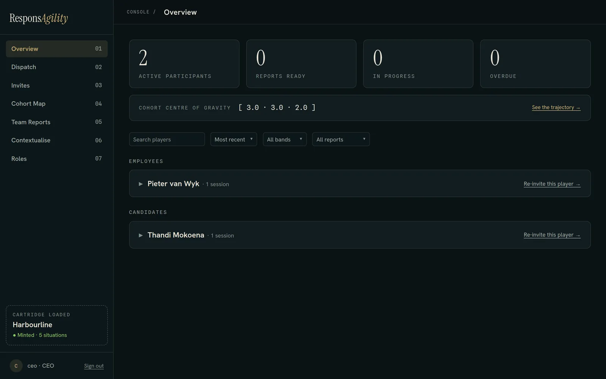
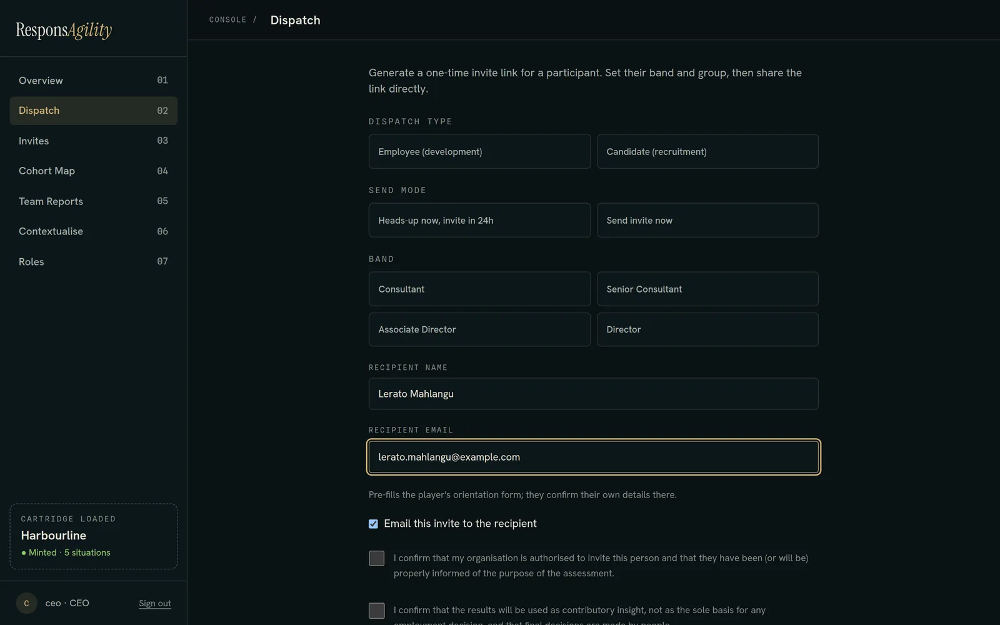
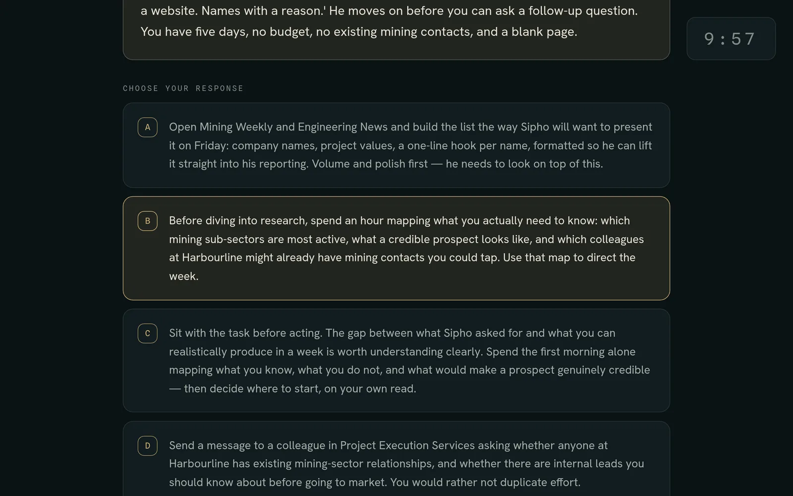
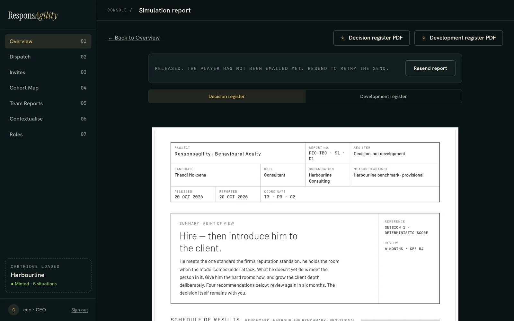
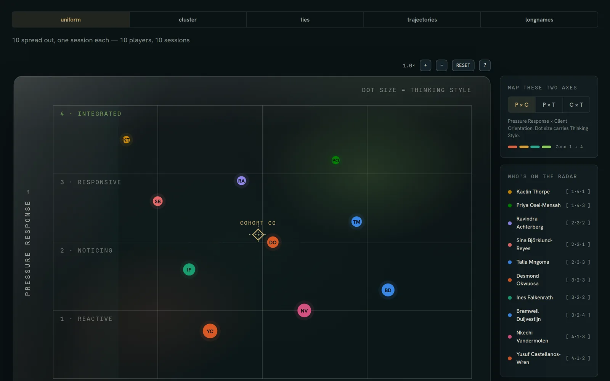
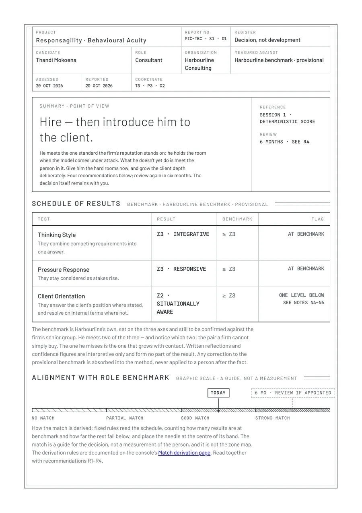

Responsagility
A behavioural-acuity platform, live in production with real organisations. I'm the technical co-founder and built both products, the web platform and the mobile app, from the ground up.
Summary
Responsagility measures how people behave under pressure. An organisation sends short, branching workplace simulations to its employees or candidates, each person plays them, and the platform produces a report that the organisation uses for development and hiring decisions.
There are two products. The web platform is where organisations run everything: inviting people, tracking sessions, reading and releasing reports, and exporting them. The mobile app, on iOS and Android, is a daily-practice companion with AI-generated reflections.
Both are live. The platform is multi-tenant, so several organisations use it at once with their data strictly separated.

My role
I'm the technical co-founder. I designed and built the whole platform: frontend, backend, database, authentication, testing, deployment, and reporting. My co-founder owns the behavioural model and the content; I own everything that runs.
- The web platform end to end, from schema to deployment
- The mobile app end to end, including its backend services
- The multi-tenant data model and its access controls
- The AI-assisted content pipeline and the deterministic scoring beside it
- Reporting: branded PDFs, Excel exports, personal-data deletion
- The 1,500+ case test suite and the migration-first release workflow
What I built
Web platform, live in production
- Multi-tenancy: many organisations share one database and never see each other's data.
- Layered data protection: PostgreSQL row-level security, organisation-level access checks, and validation at API boundaries.
- An AI-assisted content pipeline for creating and reviewing behavioural simulations, with a deterministic scoring system the AI has no part in.
- Personal-data deletion, branded PDF reports and Excel exports, built to client requirements.
- A 1,500+ case automated test suite covering application logic and PostgreSQL integration.
- A migration-first release workflow, which lowers the risk of each database change and deploy.
Mobile app, iOS and Android
- A cross-platform daily-practice app built from scratch: authentication, account management, backend services, and AI-generated reflections.
- Registration, email verification, password recovery through deep links, and account deletion that meets App Store requirements.
- A submission system that safely handles retries, offline states, and fresh installs without creating duplicate entries.
- AI-generated daily and weekly reflections, processed on a schedule and written in one shared persona.
- A backend secured with JWT verification and per-user access checks.
Interesting problems
Keeping tenants apart, in depth
One database serves every organisation, so separation cannot rest on a single check. Row-level security in PostgreSQL is the floor, organisation-level access checks sit above it in the application, and validation at every API boundary stops bad input before it reaches either. The test suite runs against PostgreSQL itself as well as the application logic.
Using AI for content without letting it score
AI helps write and review the simulations, which speeds up the content pipeline. A person's score has to be repeatable and explainable, so scoring is deterministic and the AI plays no part in it. The same answers always produce the same result.
Submissions that survive bad networks and fresh installs
On mobile, a submission can be retried, sent while offline, or sent again from a fresh install. None of these may create a duplicate entry, and the backend enforces that rule instead of trusting the client.
Stack
Media
Five screens from a local sandbox of the platform with a fictional organisation, Harbourline Consulting, and fictional people. No client data appears. Read top to bottom, they follow one person from invitation to report.

An organisation invites an employee or candidate by role. The invite email goes out from the platform.

Short, branching situations under a timer. Choices feed a deterministic score; the AI never touches it.

The organisation reviews each report before releasing it. Released reports can be emailed or downloaded as branded PDFs.

Where a team sits on the measured axes, shown here with demonstration data.

The branded PDF generated for every completed sitting. Content and names are fictional.